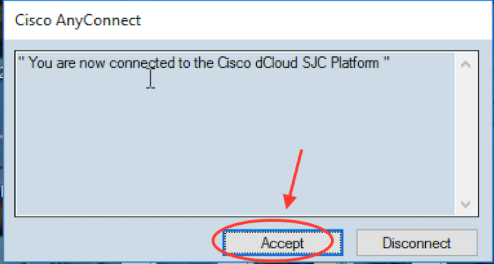
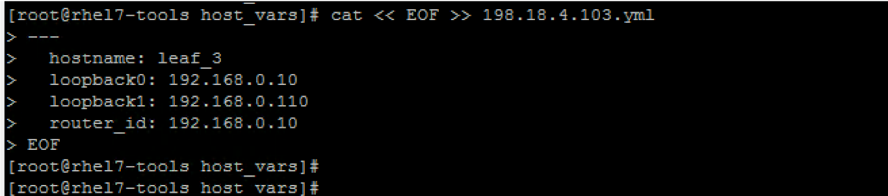

Task 1 - Prepare Ansible node
Your first task will be to build an Ansible node on a server running redhat CentOS operating system. At the end of this task, you will have a fully operational Ansible node.
Step 1: Connect to lab using anyconnect VPN
You will connect to dcloud-rtp-anyconnect.cisco.com using Cisco VPN AnyConnect client, as shown in below picture, with the username and password provided by the lab admin.
Note: lab admin will furnish the credentials information to the participant. If you don't have this information please ask the lab speakers.
Step 2: Enter VPN credentials
After prompted for credentials, use the credentials provided by the lab admin.
• Below is an example of user logging into a reference POD:

- Hit accept when the prompt appears to accept the VPN connection login

Step 3: RDP to workstation
In this step, you will connect to the workstation with RDP client on your machines. Use below details for this RDP session:
- Workstation: 198.18.133.36
- Username: dcloud\demouser
- Password: C1sco12345
Below screenshot is only an example for this RDP connection:

Step 4: MTputty
Once you have the RDP session to the remote workstation, then you will use MTputty client to connect to all devices in this lab.
MTputty is already installed on the Desktop of the workstation where you connected using RDP. Run this application by clicking on the icon on the desktop:

Step 5: SSH into Ansible node
SSH into Ansible node (198.18.134.150) by double clicking the Ansible icon on the left pan with username root and password C1sco12345

Step 6: Verify Python
Once successfully SSH into the ansible node, the very first thing we are going to do after logging into Ansible server is verify the python version by running python --version command - as shown below:
[root@rhel7-tools ~]# python --version
It is an important step as we need minimum 2.7.5 version of python in order to install some features for ansbile. The output of above command confirms this version.
Ansible can be run from any machine with Python 2 (versions 2.6 or 2.7) or Python 3 (versions 3.5 and higher) installed.
Step 7: Install PIP
After verifying we have the minimum version of python installed, we are now going to Install PIP python package using easy_install pip command as shown below:
[root@rhel7-tools ~]# easy_install pip
Below screenshot shows the execution of above command:

Next, update pip to latest version by executing command pip install --upgrade pip as shown below:
[root@rhel7-tools ~]# pip install --upgrade pip
Note: you can ignore the warning related to python version. Below screenshot shows the exection of above command:
After installing PIP package, we are going to add the relevant packages that are needed for this Ansible based VXLAN lab. Below are the packages required for this lab.
- Paramiko
- PyYAML
- Jinj2
- Httplib2
Run the command pip install paramiko PyYAML jinja2 httplib2, as shown below, to install these packages:
[root@rhel7-tools ~]# pip install paramiko PyYAML jinja2 httplib2
Below screenshot shows the execution of above command:

As a final step, we are going to install Ansible on this RHEL. Once the install is initiated by using pip install ansible==2.8.0b1 command (as shown below). It may take few minutes for it to download and install.
[root@rhel7-tools ~]# pip install ansible==2.8.0b1
Below screenshot shows the execution of above command:

Step 8: Verify Ansible
After installation is complete, check Ansible version by executing command ansible --version, as shown below:
[root@rhel7-tools ~]# ansible --version
Below screenshot shows the execution of above command:
Step 9: Create Ansible Inventory
Now, we are going to create inventory, host variables and Configuration file. This is important as Ansible works against multiple systems in the system by selecting portions of systems listed in Ansible inventory. Similarly, configuration settings in Ansible are adjustable via configuration file.
Create folder named LTRDCN-1572 as working environment and verify that it’s empty:
[root@rhel7-tools ~]# mkdir LTRDCN-1572 && cd LTRDCN-1572
[root@rhel7-tools LTRDCN-1572]# ls
Below screenshot shows the execution of above command:
Next:
- Create Ansible inventory file to include Spine and Leaf switches.
- By default Ansible has inventory file saved in location /etc/ansible/hosts.
- In this lab we will create hosts file in the working environment. This file is created from ansible host prompt using
catcommand. Note: you should copy and paste the complete section below i.e., starting fromcattillEOF(also shown in subsequent screenshot):cat << EOF >> hosts #define global variables, groups and host variables [all:vars] ansible_connection = local user=admin pwd=C1sco12345 gather_fact=no [jinja2_spine] 198.18.4.202 [jinja2_leaf] 198.18.4.104 [spine] 198.18.4.201 [leaf] 198.18.4.101 198.18.4.103 [server] 198.18.134.50 eth1=172.21.140.10 gw=172.21.140.1 198.18.134.52 eth1=172.21.140.11 gw=172.21.140.1 198.18.134.53 eth1=172.21.141.11 gw=172.21.141.1 EOF
Below screenshot shows the output of above command:

- Now you may verify the content of this file using below command:
[root@rhel7-tools LTRDCN-1572]# more hosts
Below screenshot shows the execution of above command:

-
Create Ansible config (ansible.cfg) using the same steps as above. Note: you should copy and paste the complete section below i.e., starting from
cattillEOF(as shown in below screenshot):cat << EOF >> ansible.cfg [defaults] inventory = hosts host_key_checking = false record_host_key = true stdout_callback = debug deprecation_warnings = False EOF -
Now you may verify the content of this file using below command:
[root@rhel7-tools LTRDCN-1572]# more ansible.cfg
Below screenshot shows the output of above commands:

-
Do
lsto verify the file that you just created under project folder LTRDCN-1572.Below screenshot shows the execution of above command:

-
Create host variable folder named
host_varsin folderLTRDCN-1572by using below command. In this lab, we will use host_vars file to define the variables for various hosts (in next bullets):[root@rhel7-tools LTRDCN-1572]# mkdir host_vars && cd host_vars -
Create host variable file for each host in inventory by using the cat command. The variable file for a switch is created using the below cat command. Note: you can copy and paste starting from
cattillEOF(as shown in below screenshot). Note: the spaces in the file are important so do not remove those:
cat << EOF >> 198.18.4.101.yml
---
hostname: leaf_1
loopback0: 192.168.0.8
loopback1: 192.168.0.18
router_id: 192.168.0.8
EOF
Below screenshot shows the execution of above command:
- Now you may verify the content of this file using
more 198.18.4.101.ymlas shown below:[root@rhel7-tools LTRDCN-1572]# more 198.18.4.101.yml
Below screenshot shows the execution of above command:
- Create a new host variable file for next host in inventory. The variable file for a switch is created using the below cat command. Note: you can copy and paste starting from
cattillEOF(as shown in below screenshot). Note: the spaces in the file are important so do not remove those:
cat << EOF >> 198.18.4.103.yml
---
hostname: leaf_3
loopback0: 192.168.0.10
loopback1: 192.168.0.110
router_id: 192.168.0.10
EOF
Below screenshot shows the execution of above command:

- Now you may verify the content of this file using
more 198.18.4.103.ymlas shown below:[root@rhel7-tools LTRDCN-1572]# more 198.18.4.103.yml
Below screenshot shows the execution of above command:

- Create a new host variable file for next host in inventory. The variable file for a switch is created using the below cat command. Note: you can copy and paste starting from
cattillEOF(as shown in below screenshot). Note: the spaces in the file are important so do not remove those:
cat << EOF >> 198.18.4.104.yml
---
hostname: leaf_4
loopback0: 192.168.0.11
loopback1: 192.168.0.111
router_id: 192.168.0.11
EOF
- Now you may verify the content of this file using
more 198.18.4.104.ymlas shown below:[root@rhel7-tools LTRDCN-1572]# more 198.18.4.104.yml
Below screenshot shows the execution of above commands:
- Create a new host variable file for next host in inventory. The variable file for a switch is created using the below cat command. Note: you can copy and paste starting from cat till EOF (as shown in below screenshot). Note: the spaces in the file are important so do not remove those:
cat << EOF >> 198.18.4.201.yml
---
hostname: spine-1
loopback0: 192.168.0.6
loopback1: 192.168.0.100
router_id: 192.168.0.6
EOF
- Now you may verify the content of this file using
more 198.18.4.201.ymlas shown below:[root@rhel7-tools LTRDCN-1572]# more 198.18.4.201.yml
Below screenshot shows the execution of above commands:
- Create a new host variable file for next host in inventory. The variable file for a switch is created using the below cat command. Note: you can copy and paste starting from cat till EOF (as shown in below screenshot). Note: the spaces in the file are important so do not remove those:
cat << EOF >> 198.18.4.202.yml
---
hostname: spine-2
loopback0: 192.168.0.7
loopback1: 192.168.0.100
router_id: 192.168.0.7
EOF
- Now you may verify the content of this file using
more 198.18.4.202.ymlas shown below:[root@rhel7-tools LTRDCN-1572]# more 198.18.4.202.yml
Below screenshot shows the execution of above commands:
Step 10: Ansible role structure
Role is very useful technique to manage a set of playbooks in Ansible. In this lab, we will use two different playbooks to manage configuration for Spine and Leaf switches.
We will use role structure and manage the two plays into single playbook. A role directory structure contains several directories of defaults, vars, files, handlers, meta, tasks and templates.
In this lab:
- we will use vars, templates and tasks folders
- main.yml file in
/varsfolder contains dictionary of variables for this role - main.yml file in
/tasksfolder contains the Ansible playbook for this role
To proceed further with roles in subsequent Tasks:
• Create roles directory in folder LTRDCN-1572 by issuing below commands:
[root@rhel7-tools LTRDCN-1572]# cd /root/LTRDCN-1572
[root@rhel7-tools LTRDCN-1572]# mkdir roles
This will be used in the subsequent tasks in this lab.